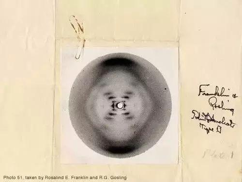
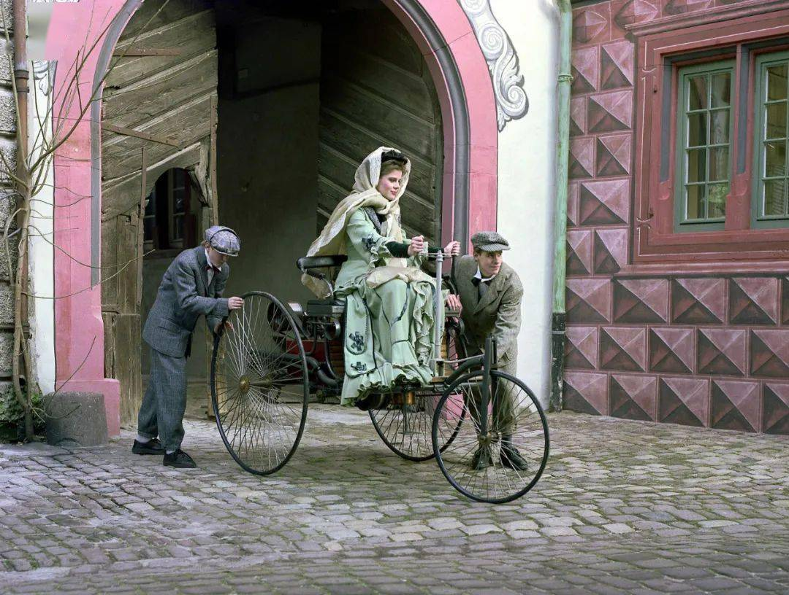

15,000 New York working women, mainly textile workers, marched through the city demanding higher wages and shorter working hours, as well as the right to vote.
The International Conference of the Socialist Party in Copenhagen, Denmark, established an international Women's Day to commemorate the women's rights movement and to gain support for the achievement of universal suffrage for women.
Women's Day was celebrated in several European countries and in the United States. In addition to the right to vote and to hold public office, they demanded the right to work, vocational training, and the elimination of discrimination against work..
In the midst of the peace movement brewing on the eve of the First World War, Russian women celebrated their first International Women's Day on the last Sunday of February 1913. Women in other parts of Europe also gathered on or around 8 March the following year to express their protest against the war.
As the First World War raged on, a huge gathering of women took place in The Hague, Holland, on 15 April. It was attended by over 1,300 women from over 12 countries.
In the context of the war, Russian women chose to protest again on the last Sunday of February (8 March in the Gregorian calendar). Four days later, the Tsar abdicated and the Provisional Government granted women the right to vote.
The Second International Congress of Communist Women, held in Moscow, designated 8 March each year as International Women's Day in honor of the heroic struggle of Russian women workers in the February Revolution of 1917.
After the Second World War, 8 March was celebrated in many countries, and in 1975, during International Women's Day, the United Nations began celebrating 8 March as International Women's Day.